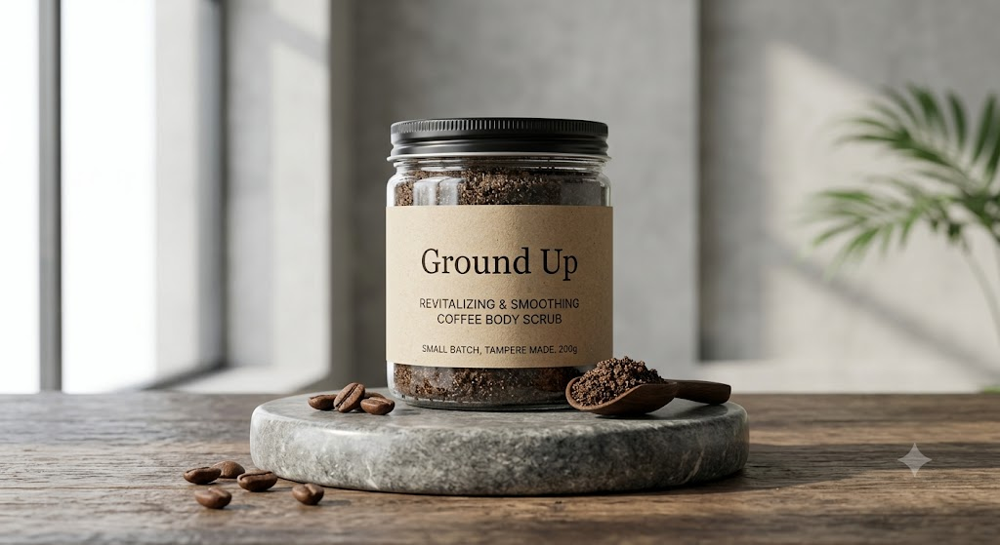

Premium, upcycled coffee body scrubs. Cultivated from Tampere roasteries, refined for your skin.
SECURE BATCH #001
We partner with local roasteries to rescue high-quality grounds before they reach the bin.
Infused with cold-pressed oils to restore moisture while the coffee naturally exfoliates.
Hand-mixed in small batches to ensure absolute freshness and quality control.